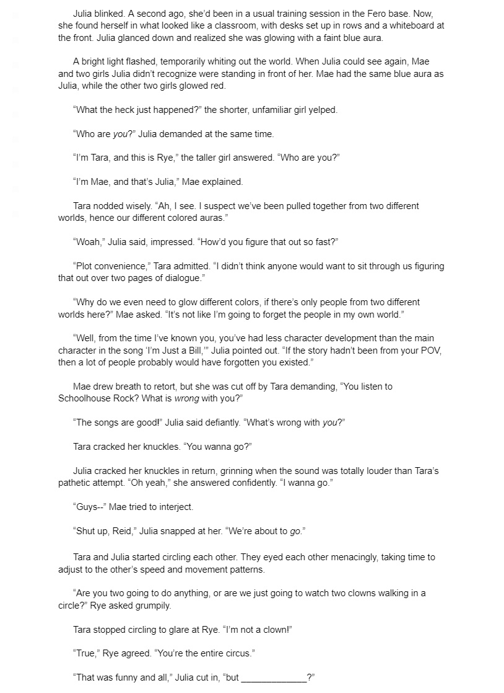
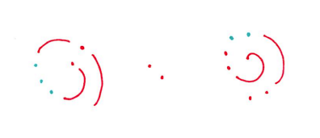
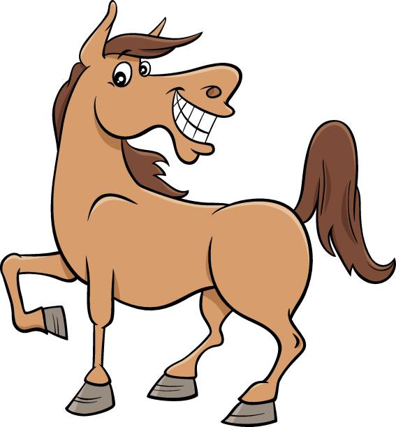
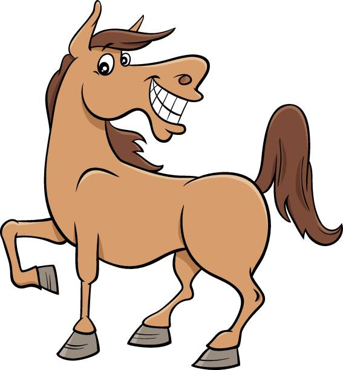
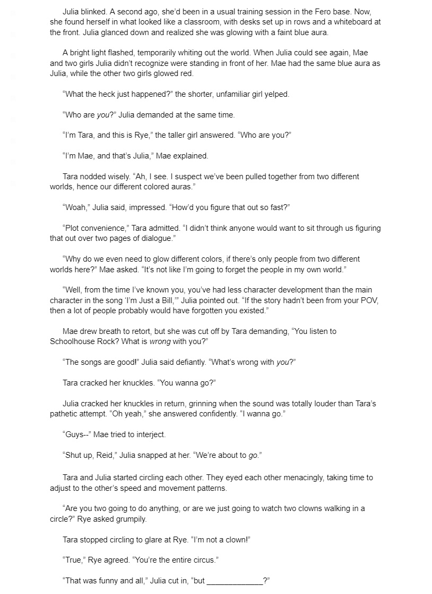
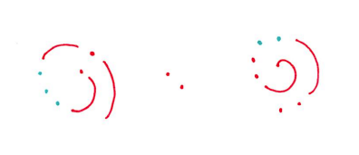
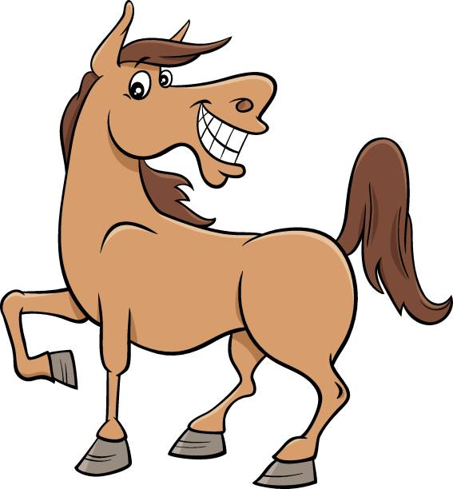

Puzzle 4
The answer to this puzzle is what goes in the blank of Julia's dialogue. Other than that, the previous text is not a puzzle.
Clues
1.
 

2. Start from the center.
Answer:Puzzle 4
The answer to this puzzle is what goes in the blank of Julia's dialogue. Other than that, the previous text is not a puzzle.
Clues
1.

2. Start from the center.
Answer:Hints:
I don't understand the clue with the two images.
I don't understand the clue about starting from the center.